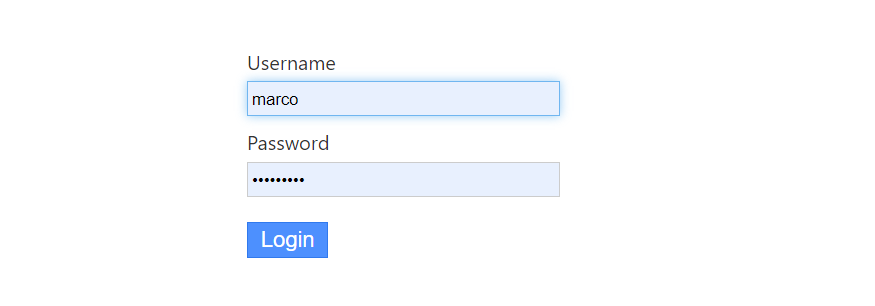
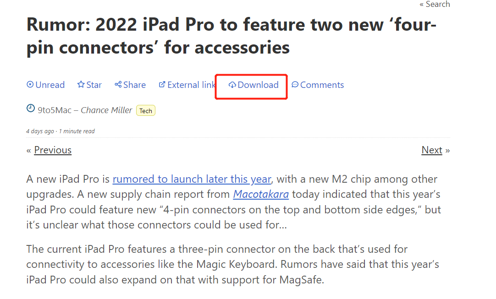

这篇文章上次修改于 223 天前，可能其部分内容已经发生变化，如有疑问可询问作者。
一直在使用 feedly 作为 rss 订阅器阅读文章，基本可以满足我的需求，但是部分站点只能预览摘要，想要阅读全文还打开文章链接。最近发现一个开源免费的 rss 系统，他的特点就是轻量无多于内容，致力于阅读体验。同时我发现他的一些独有功能，可以在文章只显示摘要时，有一个下载全文的选项，这样就实现了大部分文章在 rss 阅读器中就可以阅读全文的需求了。
Miniflux 需要自己部署在服务器上，它提供了多种安装方法，最简单的就是 docker 方式，避免手动配置环境及数据库等步骤。
我的系统环境：Ubuntu server 20.04
Miniflux 官网：https://miniflux.app/
GitHub 主页：https://github.com/miniflux/v2
安装
这里介绍通过 docker compose 安装的方法，关于 docker 环境的部署参考我的教程：https://blog.niekun.net/archives/2742.html#title-1
新建 miniflux 文件夹用来放置相关配置：
mkdir miniflux
cd miniflux
然后建立 docker-compose.yml 配置文件，内容如下：
version: '3.4'
services:
miniflux:
image: ${MINIFLUX_IMAGE:-miniflux/miniflux:latest}
container_name: miniflux
restart: always
ports:
- "18080:8080"
depends_on:
- db
environment:
- DATABASE_URL=postgres://miniflux:[email protected]/miniflux?sslmode=disable
- BASE_URL=https://miniflux.your.domain
- RUN_MIGRATIONS=1
- CREATE_ADMIN=1
- ADMIN_USERNAME=admin
- ADMIN_PASSWORD=test123
- DEBUG=1
# Optional health check:
# healthcheck:
# test: ["CMD", "/usr/bin/miniflux", "-healthcheck", "auto"]
db:
image: postgres:latest
container_name: postgres
restart: always
environment:
- POSTGRES_USER=miniflux
- POSTGRES_PASSWORD=secret
volumes:
- miniflux-db:/var/lib/postgresql/data
healthcheck:
test: ["CMD", "pg_isready", "-U", "miniflux"]
interval: 10s
start_period: 30s
volumes:
miniflux-db:其中需要自行根据实际情况修改一些内容：
- port 端口的主机映射，这里我使用了 18080 映射容器内的 8080 端口
- BASE_URL 设置需要访问 miniflux 服务的域名地址，后面需要配置反向代理
- ADMIN_USERNAME 设置管理员用户名
- ADMIN_PASSWORD 设置管理员用户密码
敏感的环境变量值可以单独放在同配置文件路径下的 .env 文件中，上面的 docker 安装教程中有介绍。
注意 DATABASE_URL 地址中的 postgres 用户名密码对应于 POSTGRES_USER 和 POSTGRES_PASSWORD 的值，需要保持一致。
然后就可以启动容器：
docker-compose up -d
反代配置
首先如果需要解析到二级域名下，先要在 ns 服务端添加二级域名的 A 记录，然后才能正常解析 url。
使用域名访问 miniflux 服务，需要通过主机使用的反代软件配置解析，我服务器使用的是 nginx，下面介绍配置方法。
给 nginx 配置添加如下内容：
server {
listen 443 ssl http2;
listen [::]:443 ssl http2;
server_name miniflux.your.domain;
include my-server/ssl;
location / {
proxy_pass http://127.0.0.1:18080;
proxy_redirect off;
proxy_set_header Host $host;
proxy_set_header X-Forwarded-Host $host;
proxy_set_header X-Real-IP $remote_addr;
proxy_set_header X-Forwarded-For $proxy_add_x_forwarded_for;
proxy_set_header X-Forwarded-Proto $scheme;
proxy_set_header Upgrade $http_upgrade;
proxy_set_header Connection "upgrade";
proxy_http_version 1.1;
}
}以上配置需要根据实际情况修改监听端口及 domain，由于之前配置的 miniflux 的映射端口是 18080，所以反代到本地的对应端口即可。
以上 miniflux 和 nginx 反代配置完成后应该就可以访问 https://miniflux.your.domain 了。用户名密码就是 docker 配置文件中定义的管理员账户及密码：

使用
如果某一篇文章不显示全文，只需要点击文章顶部的 download 按钮即可加载全文：

miniflux 提供了丰富的 api 接口可供二次开发使用，通过简单的请求就可以获取到文章的各种信息，返回数据为 json 格式。
官方 api 文档参考：https://miniflux.app/docs/api.html
没有评论